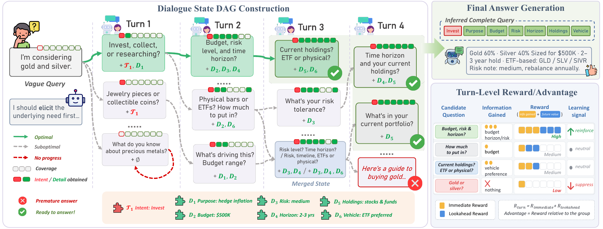
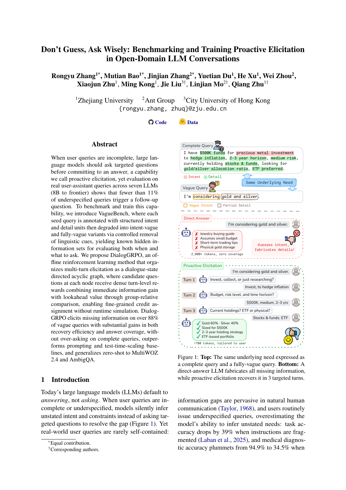

Code on GitHub
Code on GitHub Make the gap measurable.
Annotate real open-domain seed queries with structured intent and detail units. Remove linguistic cues to create intent-vague and fully-vague variants.
VagueBenchBenchmarking and Training Proactive Elicitation
in Open-Domain LLM Conversations
Zhejiang University · Ant Group · City University of Hong Kong
* Equal contribution
“I'm considering gold and silver.”
Jewelry? Short-term trading? Physical gold?
The model answers a question the user never asked.
“Are you looking to invest, collect, or just research?”
“Invest, to hedge inflation.”
Main results on VagueBench. Vague splits are ranked by Ask%. Complete queries are ranked by coverage F1.
of underspecified queries trigger a follow-up question in the evaluated baseline LLMs.
of vague queries elicit missing information with DialogGRPO.
evaluated, from 8B models to frontier systems.
Results reported in the paper. See the experimental settings and tables for model-specific comparisons.
When user queries are incomplete, large language models should ask targeted questions before committing to an answer. We introduce VagueBench, an open-domain benchmark with controlled vagueness and known hidden information, to evaluate both when and what to ask. We propose DialogGRPO, an offline reinforcement learning method that organizes multi-turn elicitation as a dialogue-state directed acyclic graph. Dense turn-level rewards combine immediate information gain with lookahead value, enabling fine-grained credit assignment without runtime simulation. The method improves information recovery and answer coverage without over-asking on complete queries, and transfers zero-shot to MultiWOZ 2.4 and AmbigQA.
Annotate real open-domain seed queries with structured intent and detail units. Remove linguistic cues to create intent-vague and fully-vague variants.
VagueBenchOrganize multi-turn dialogues as a state DAG. Compare candidate questions at each node using group-relative advantage estimation.
DialogGRPOCombine immediate information gain with lookahead value. Learn to recover missing information efficiently before giving an answer.
Dense turn-level rewards
Read the full methodology, evaluation, ablations, and supplementary material.
